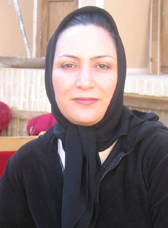

پذيرش > تریبون > مقالات > زن كشي، به بهانه مهدورالدم بودن


 زن كشي، به بهانه مهدورالدم بودن زن كشي، به بهانه مهدورالدم بودن
23 آذر 1385 - زهره ارزني - نسخه قابل چاپ
بر اساس قانون مجازات اسلامي ، مرتكب قتل عمد محكوم به مرگ ميشود . اما درهمان قانون مواردي پيش بيني شده است كه مي توان نام آن را ارفاق به قاتل گذاشت . اين ارفاقها گاهي قاتل را از مجازات معاف مي كند مثل دفاع مشروع (مواد 61 و 629) يا قاعده فراش ( ماده 630) كه بر اساس آن اگر شوهر، زن خود را حين زنا با مرد ديگري ببيند و زن يا مرد يا هر دو را بكشد، مجازات نمي شود .
گاهي مجازات قتل عمد را تعديل مي كنند چنانكه بر اساس ماده 220 پدر قاتل قصاص نمي شود ، فقط محكوم به پرداخت ديه در حق اولياي دم ميشود و در برخي موارد نيز ادعاي قاتل مبني بر مهدور الدم بودن قاتل و حلال بودن خونش سبب اعطاي اين ارفاق مي شود. چنانكه در تبصره 2 ماده 295 قانون مجازات اسلامي، قانونگذار مقرر كرده ، اگر قاتل ادعا كند كه به ظن مهدور الدم بودن مقتول، او را به قتل رسانده و بعد از قتل نتواند آنرا اثبات كند ، قتل شبه عمد محسوب شده و تنها مجازات قاتل، پرداخت ديه مقتول است.
با وجود اينكه اين قوانين براي همه افراد جامعه اعم از زن و مرد وضع شده، اما بيشتر قربانيان اينگونه قتل ها كه با ارفاق قانوني مواجه مي شوند، زنها هستند.
در اين ميان ادعاي مهدور الدم بودن مقتول، اين راه فرار را راحت تر در اختيار قاتل مي گذارد. به ويژه آنكه مقتول زن باشد و قاتل نقش يك نجات دهنده ناموس و آبروي خانواده يا جامعه را بازي كرده و هدف از اين كار را تطهير جامعه از لوث افراد گنهكار و خراب عنوان كند .اين مسئله وقتي بغرنج تر مي شود كه كه يك یا چند نفر از وراث فرد مقتول كه رابطه نسبي با قاتل دارند (مثلا فرزندان مشترك مقتول وقاتل) نيز با قاتل همصدا شده و شعارهاي او را در دادگاه تائيد كنند، چنانچه اين امر چند ماه پيش در شعبه 71 دادگاه استان تهران در محاكمه مردي كه متهم به قتل همسرش بود اتفاق افتاد.مرد ادعا مي كرد زنش مهدورالدم بوده و فساد اخلاقي داشته و فرزندان اين فرد نيز ادعاي پدر را تائيد مي كردند. دادگاه نيز در نهايت با استناد به تبصره 2 ماده 295 قانون مجازات اسلامي مرد را از قصاص معاف كرد و او را تنها محكوم به ديه زن كرد كه البته بر اساس ماده 209 قانون مجازات اسلامي اگر مرد مسلماني، زن مسلمان را بكشد، اولياي دم زن بايد نصف ديه كامل را به قاتل پرداخت كنند تا حكم قصاص اجرا شود.
در ادعاي مهدور الدم بودن، مقتول مي تواند زن يا مرد باشد ، اما اين ادعا اغلب زماني عنوان مي شود كه مقتول زن باشد و مرد بخواهد براي رهايي از مجازات مرگ به آن استناد كند. در صفحه حوادث روزنامه ها، اگر قتل زني گزارش شده باشد و قاتل هم يكي از اقوام زن باشد، بلافاصله مي بينيم كه قاتل، ادعا كرده زن خراب بوده و فساد اخلاقي داشته و او با اين قتل مي خواسته بي ناموسي را از دامن خانواده اش پاك كند.
از سوي ديگر ادعاي مهدور الدم بودن زن، زمانيكه نسبت فاميلي نسبي و سببي هم با قاتل داشته باشد، راحتتر از سوي جامعه پذيرفته مي شود. به گونه اي كه در اين موارد اگر موضوع حساس نباشد و مطبوعات روي آن مانور ندهند ، ادعاي قاتل در مورد مهدورالدم بودن مقتول به احتمال زياد در دادگاه هم پذيرفته ميشود . چنانچه نمونه هايي از آن را در سال هاي اخير شاهد بوده ايم و جديدترين مورد آن هم مردي است كه ارديبهشت ماه امسال با ادعاي مهدور الدمي از سوي شوهرش به قتل رسيد و به خاطر همين ادعا كه البته ثابت هم نشد، قاتل از مجازات قصاص گريخت.
البته اين فقط مردان خانواده نيستند كه زنان را به بهانه مهدورالدمي مي كشند و گاه بهانه اين حلال بودن خون زنان به خطر افتادن ناموس جامعه است. هر از گاهي در نقطه اي ازكشور چندين زن به قتل مي رسند كه عموما نه قاتلشان شناسايي ميشود و نه هويت زنان مقتول. زنان مقتولي كه در بيشتر موارد از خانواده طرد شده اند ،كسي به انتظارشان نبوده و وقتي بي سرو صدا به قتل مي رسند، حتي نامي برروي قبر نقش نمي بندد . زناني كه براي گذران زندگي مجبور به خود فروشي بوده اند و براي همين مهدور الدم هستندو حكمشان مرك است تا زمين از نسل اينگونه افراد پاك شود. قاتلان نيز فارغ از اينكه ادعايشان پذيرفته شود يا نه ادعاي مهدور الدم بودن اين زنان را مطرح مي كند. چنانچه در رابطه با سعيد حنايي و قاتلان كرماني شاهد آن بوديم.
اما سوالي كه در اين ميان بي پاسخ مي ماند اين است كه حتي با فرض وارد بودن اتهام اخلاقي به زن، آيا واقعا مجازات او مرگ است ؟ چرا كه بر اساس قانون تنها در يك مورد رابطه نا مشروع زن شوهر دار كه مرتكب زنا شده باشد و آنهم شرايط احصان مهيا باشد مجازات مرگ در نظر گرفته شده است.
سوالات بي پاسخ اما به همين جا ختم نمي شود و جاي آن دارد كه سوال كنيم آيا زمان اجراي مجازات شخصي بسر نيامده؟ ؟ آيا حتي به فرض مجرم بودن فرد مقتول ، با اعمال اينگونه ارفاق ها براي قتل، مقتول را از دفاع كه جزو حقوق اساسي هر متهمي است محروم نمي كنيم ؟ و با اين امر به افراد سود جو اجازه نمي دهيم كه با استفاده از ارفاقهاي قانوني خود را ازمجازات قانوني معاف كنند ؟ و مهمتر از همه اينكه: آيا وقت آن نرسيده كه در بازنگري قانون مجازات اينگونه مواد را حذف نموده و مجازات كردن افراد را فقط وظيفه قوه قضائيه ،آنهم بعد از محاكمه عادلانه و طي شدن تمامي مراحل دادرسي منوط كنيم ؟
ارسال به
بالاترین
،
توییتر
،
فریندفید
،
فیسبوک
در همين بخش :
 دهمین دورۀ مراسم تندیس صدیقه دولت آبادی ۱۳۹۲ دهمین دورۀ مراسم تندیس صدیقه دولت آبادی ۱۳۹۲
کارت پستالهایی به بهانهی هشت مارس و به یاد همهی مبارزین راه برابری
بیانیه بیش از 350 تن از مدافعان حقوق زنان به مناسبت روز جهانی زن؛ زنان هر روز فرودستتر میشوند
لباسی که برای تن ما دوخته اند! /اعظم بهرامی
چالشها و چشمانداز فعالیت مدنی زنان
ديگر بخش ها :
طرح یک میلیون امضا
|
مقالات
|
سایت نوشته ها
|
اخبار
|
گزارش كمپين
|
گفت و گو
|
علیه سکوت
|
كوچه به كوچه
|
نامه های شما
|
گزارش ویژه
|
گفتگو با اعضا
|
ویژه سالگرد کمپین
|
تصویر برابری
|
دل آرام علی
|
تریبون
|
مقالات
|
تاریخ شفاهی
|
خارج از چارچوب
|
کتابخانه
|
درباره کمپین
|
کمپین در شهرها
|
کمپین در بند
|
صدای تغییر
|
ویژه 22 خرداد
|
لایحه حمایت از خانواده
|
گالری
|
عشا مومنی
|
امیر یعقوبعلی
|
خدیجه مقدم
|
راحله عسگری زاده و نسیم خسروی
|
پروین اردلان،جلوه جواهری، مریم حسین خواه، ناهید کشاورز
|
زینب پیغمبرزاده
|
سعیده امین، سارا ایمانیان، محبوبه حسین زاده، ناهید کشاورز و همایون نامی
|
احترام شادفر
|
نسیم سرابندی زاده،فاطمه دهدشتی
|
وبلاگ مهمان
|
پرونده خرم آباد
|
دستگیری ها
|
مریم مالک
|
پرستو اللهیاری
|
مهرنوش اعتمادی
|
سمیه رشیدی
|
Other Languages
|
همراهان
|
«فراخوان کمپین ده روز با بهاره هدایت»
| English
|